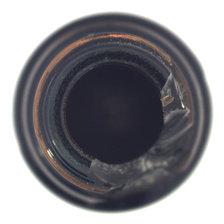

01 / COMPUTER VISION
InspectLab↗
What looks normal?
And what doesn’t?
RECORDED MODEL OUTPUTBOTTLE / 000

Recorded inference · DINOv2 · 16 normal references
I built a visual inspection tool that compares product images with normal examples and highlights unusual patches.
A frozen DINOv2 encoder does the feature extraction. The browser demo runs the same quantized model used in the benchmark, including on new uploads.
0.988AUROC
Mean image AUROC across three MVTec categories and three seeds. RGB baseline: 0.841.
349 test images · 16 references per category. Ranking performance, not threshold accuracy.Python / DINOv2 / ONNX / WebAssembly
Sample: MVTec AD · data & model notices ↗